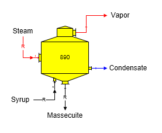
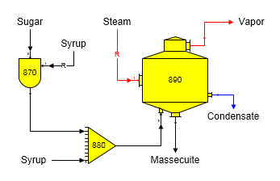
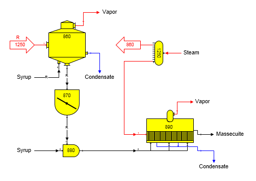

Massecuite Out Required The syrup flow in and massecuite flow out can become required in a model when a flow downstream from the pan is required by another station in the model. For example, if a certain quantity of sugar were needed from a centrifugal station, this would require that the massecuite flow into the centrifugal becomes a required flow. Hence, the syrup flow to the pan would be required. Required flows will work their way back to a place in the model where they can be satisfied; such as, in a distributor station, or by an external flow into the model. The figure below shows a pan with both syrup and massecuite flows required (see the small "R" on the syrup and massecuite flow streams).

Entries are made on the Pan Properties window to control the crystal content and temperature of the massecuite leaving the pan (see Pan Properties section for a description of each property).
Magma Footing Magma can be used to seed a pan. The magma is usually prepared in a Blender and fed to the pan with syrup. The figure below shows a pan with a receiver to receive both the syrup and magma and a blender station using sugar and syrup to prepare the magma.

Continuous Pan A continuous pan installation is modeled using a seed pan. The seed crystal for the pan is prepared in a separate seed pan and fed to the continuous pan with syrup. The figure below shows a continuous pan with a blender (station no. 880) to control the amount of seed as a ratio to the syrup going to the continuous pan. A receiver station could be used instead of the blender station and the quantity of seed to the continuous pan would be controlled by the quantity of syrup to the seed pan.
